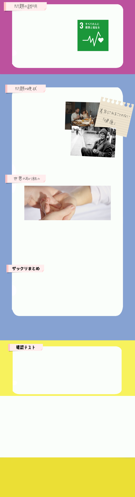
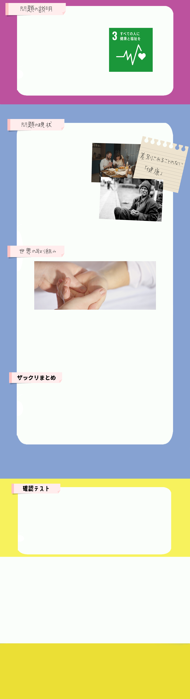

SDGsの目標3「すべての人に健康と福祉を」では、あらゆる年齢のすべての人の健康的な生活を確保し、福祉を推進することを課題としています。 あらゆる年齢のすべての人の健康な生活を確保し、福祉を増進することは、豊かな社会を構築するために必要な要素です。健康な生活と福祉を増進することは、人間を幸福にすることにつながります。 人種、宗教、政治信条や経済的・社会的条件によって差別されることなく、最高水準の健康に恵まれることは、 あらゆる人々にとっての基本的人権の一つと考えられます。
2017年には5歳になる前に命を落とす子どもは540万人にも昇ります。そして、生後1カ月間に亡くなった新生児の数は250万人と半数近くを占めています。 子どもたちが安全で健康に生きていくためには「安全な水」「衛生環境」「安定した栄養の摂取」は欠かせません。 栄養不足で体力が落ち、免疫も弱っている状態のときに汚れた水や不衛生な環境に接すれば感染症や伝染病にかかりやすくなるのです。 そこでSDGsでは安全な水を届けることができるような井戸などの給水設備の設置、衛生的なトイレや下水施設の建設、衛生施設までのアクセスの整備が目標と定められて取り組みが行われています。
日本で生まれた母子手帳が、今、途上国を中心に世界に広まっており、お母さんと子どもの継続した健康維持に役立っています。
パレスチナでは2008年に、世界初のアラビア語版母子手帳が発行され、紛争によって難民となった母と子どもは、避難先でも母子手帳のおかげで継続して医療サービスが受けられました。
母子手帳があることで、これまで通っていた保健所や病院に通えなくなっても、別の保健所などで引き続き予防接種や乳児検診が受けられるようにもなりました。
子供たちが安全で健康的に暮らせるため
には と 、安定した栄養の摂取が必要。
※穴埋め箇所をクリックすると正解表示